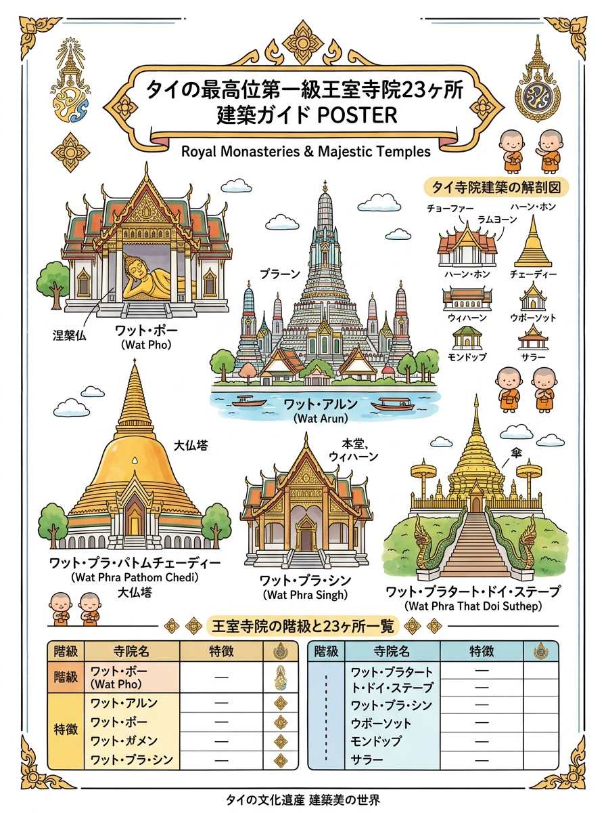
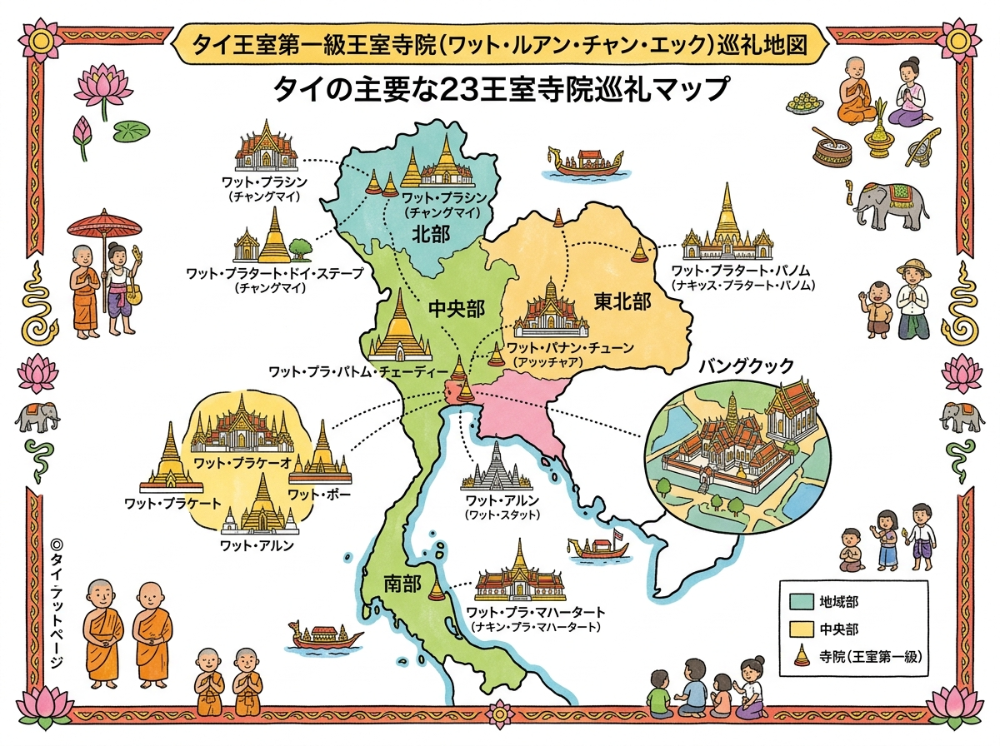

01
ワット・プラチェートゥポン（ワット・ポー）
ラーマ1世の王室菩提寺。全長46mの黄金涅槃仏（足裏螺鈿細工）、タイ古式マッサージ総本山、ユネスコ世界の記憶登録の医学石碑群、4国王の巨大仏塔。
タイ国内に23寺しか存在しない最高格式の王室寺院の名称、所在地、由緒のリスト。
クリックすると拡大して詳細を確認・印刷できます。

旅行者の持ち歩き・印刷に適した手書き風インフォグラフィック。

位置関係やルート、全体像を俯瞰できるワイドデザイン。
現地調査および公的データに基づく最新詳細情報。
ラーマ1世の王室菩提寺。全長46mの黄金涅槃仏（足裏螺鈿細工）、タイ古式マッサージ総本山、ユネスコ世界の記憶登録の医学石碑群、4国王の巨大仏塔。
王宮前広場隣。タイ仏教最高学府マハーチュラーロンコーン大学本部、ヴィパッサナー瞑想教育の中心寺院、歴代副王（前宮）一族の菩提寺。
ラーマ8世の王室菩提寺。大ブランコ前。スコータイ期のタイ最大古代青銅仏プラ・シーサッキャムニー、ラーマ2世自刻の透かし彫りチーク扉、壮麗な須弥山壁画。
ラーマ2世の王室菩提寺。チャオプラヤー川畔に聳える高さ約67mの壮大なクメール様式大仏塔（プラーン）、中国陶器片モザイク装飾、夜間ライトアップの絶景。
ラーマ6世の王室菩提寺。タイ最高・世界最大級の黄金色巨大釣鐘型ストゥーパ（高さ120.45m）、優美な立像プラ・ルアン・ローチャナリット、仏教初伝の聖地。
天然岩盤に刻まれた聖なる仏足跡を奉安。7重屋根の壮麗なモンドップ、ラーマ1世寄進のマザーオブパール（螺鈿）装飾扉と床、乾季のタイ最大級仏足跡大巡礼祭。
ラーマ6世・9世（プーミポン前国王）の王室菩提寺。歴代国王（4・5・7・9・10世）が出家修行した最高格式出家寺院、タマユット派総本山、名仏プラ・プッタチンナシー。
ラーマ4世の王室菩提寺。外壁全面が灰色大理石タイルで覆われたモンドップ型本堂、ラーマ4世自身による日食観測・天文計算や王室儀礼を描いた貴重な壁画。
ラーマ5世・7世の王室菩提寺、現第20代僧王駐錫寺院。外観は手描きベンジャロン陶器タイル、内装はベルサイユ宮殿風ゴシック・ロココ様式、王室墓地（Royal Cemetery）。
ラーマ5世の王室菩提寺。イタリア・カッラーラ産最高級白大理石造りの端正な本堂、名匠ナリス親王設計、回廊に並ぶタイ・アジア各地の傑作青銅仏コレクション52体。
ラーマ3世の王室菩提寺。タイ建築史上初の本格的中国風様式（シノワズリ）融合寺院（チョーファーを排し陶器レリーフを採用）、中国風石造彫刻と巨仏坐像。
バーンパイン宮殿対岸の中州。タイ唯一の完全西洋ネオ・ゴシック建築（キリスト教会風）仏教寺院、ステンドグラス、教会風祭壇の本尊仏、ロープウェイ渡河。
チャクリー王家ルーツ・菩提寺。ジャンク船の船底のように湾曲した優美な床（ジャンク・カーブ）、ナレースワン大王の象上決戦を描いた壮大な歴史壁画。
旧王宮チャンドラカセーム宮殿裏。古代ドヴァーラヴァティー王国期の貴重な緑色砂岩彫刻プラ・カンタラーラート（雨乞い仏）、ラーマ4世期の王室儀礼・天文壁画。
世界遺産シーサッチャナーライ歴史公園の最重要聖地。アユタヤ初期改修の壮大なクメール風プラーン（主塔）、スコータイ美術最高峰の優美な遊行仏レリーフ。
南タイ仏教の原点。タイ国内で最も完全な形で現存するシュリーヴィジャヤ建築の最高傑作ストゥーパ、チャイヤ様式の古代青銅仏・石造仏群。
立憲革命記念寺院。インドより贈呈された仏舎利とブッダガヤ聖菩提樹分枝を奉安する白亜の巨大円形ドーム型主仏塔、近代タイ史の指導者たちの遺灰安置所。
第19代ニャーナサンウォン前僧王に捧げられた寺院。ブッダガヤ大塔を模した仏塔や国際建築庭園、近隣のカオシーチャン巨大山壁レーザー大仏と一体の広大な霊場。
旧市街西端。ラーンナー建築の極致「ウィハーン・ラーイカム（金箔礼拝堂）」、至宝プラ・プッタシヒン（獅子仏）、北タイ伝統風俗を描いた古典壁画、辰年の守護仏塔。
イサーン・ラオス全土で最も尊崇されるメコン流域最大の聖地。仏陀の胸骨仏舎利を奉安する高さ53.6mの優美な白亜と黄金のラーンサーン様式聖塔、申年の守護仏塔。
ユネスコ世界遺産暫定リスト。高さ約56mのセイロン様式大仏塔（頂部は純金、「地面に影が落ちない影なし仏塔」の伝説）、南タイ上座部仏教伝播の歴史的結節点。
タイで最も美しい仏像と称賛される黄金の至宝「プラ・プッタチンナラート」、アユタヤ王寄進の螺鈿細工本堂扉、中央に聳えるクメール風プラーン（主仏塔）。
高さ46mの黄金色ラーンナー様式主仏塔（酉年の守護仏塔）、古代ドヴァーラヴァティー様式の段塔スワンナチェーディー、世界最大級の青銅製大銅鑼。